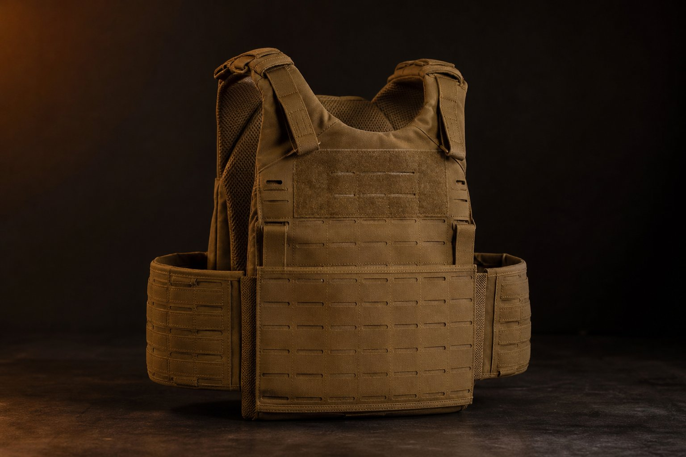

1. Méthodologie
- Notes officielles S7 — caps par mode (Normal T4 / Lockdown T5), headshot buff, Acoustic Earpads.
- Reddit r/ArenaBreakoutInfinite — retours de milliers de raids sur chaque palier d'armure.
- arenabreakout-infinite.com — base patch 1.0.0.142.19, durabilité et zones réelles.
- YouTube créateurs de contenu — tests balistiques en vidéo.

2. Tier List Équipement — S7 Utopia
3. Les découvertes S7
- Caps par mode : les T4 deviennent la norme Normal — tout T5+ en Normal est un gaspillage de Koen.
- Headshot buff : le casque sous T4 n'existe plus — c'est un accessoire de mode.
- IND70 craftable : avec Improvement Research, un IND70 S7 peut coûter moins qu'un T5 sur étagère.
- Acoustic Earpads : la valeur des casques audio explose en S7 — moddez-les.
4. Build type par mode
| Mode | Gilet | Casque | Budget |
|---|---|---|---|
| Zombie Endless (PvE) | T3-T4 | T3-T4 | ~150 000 K |
| Normal | T4 | T4 | ~300 000 K |
| Lockdown | T5 | T5 (SH65-class) | ~600 000 K |
| Forbidden | T6 (BT101) | T6 (IND70) | ~900 000 K+ |
Le T5 de Lockdown est en discussion
La ligne Lockdown — T5 de ce tableau est la règle en vigueur. Depuis le 17 novembre 2026, MoreFun consulte la communauté sur une baisse du plafond de munitions en Lockdown à T4, exception pour les calibres de sniper, l'armure T5 restant autorisée. Consultation en cours, aucun changement appliqué : tant qu'aucune note de patch n'est publiée, ce tableau est valide et un build T5 est toujours légal en Lockdown. Détail du sondage. Officiel
Le mot de la fin
La meilleure armure du jeu est celle que vous pouvez remplacer 3 fois. Sur CapitalismKamona, la liquidité bat la stat.
5. Comment lire le classement selon le mode
Un tier list d'équipement se lit mal si on l'applique à tous les modes à la fois. Le classement ci-dessus vaut pour le mode Lockdown, qui est le mode de référence de la Saison 7. Dans les deux autres modes, les écarts se resserrent et plusieurs paliers fusionnent.
| Mode | Ce que le classement privilégie | Ce qu'il faut déprioriser |
|---|---|---|
| Normal | Les pièces au meilleur rapport poids / protection : le critère est la mobilité, pas la tenue | Le haut de gamme, trop lourd et trop cher pour l'enjeu réel |
| Lockdown | La cohérence de la protection : torse, casque et sac au même niveau de qualité | Le mélange de niveaux, qui crée une zone de faiblesse |
| Forbidden | La couverture de zone : chaque centimètre de torse et de tête compte | Les pièces qui ne couvrent que le torse |
Le piège de la tier list : un classement d'équipement est un classement relatif à une rencontre. La même pièce est de premier choix face à un joueur en T3, et de dernier choix face à un joueur en T6 sur la même carte. La seule tier list stable est celle qui est liée à un mode et à une carte.
6. Les pièces qui font la différence
Sur l'ensemble de l'équipement, quatre familles de pièces concentrent l'essentiel de l'écart de performance. Elles sont classées ici par influence décroissante sur le résultat d'un raid.
- Le casque. En Saison 7, casque et masque sont deux zones de dégât séparées : chaque point perdu sur l'une n'affecte pas l'autre. C'est la pièce qui change le plus la nature d'un duel, parce qu'elle détermine si le second tir adverse fait encore des dégâts.
- Le gilet. Il porte l'essentiel de la protection, mais son utilité réelle dépend de ce qu'il couvre. Un gilet qui ne protège que le torse laisse la tête et les jambes nus : la question à poser n'est jamais « quel tier ? » mais « quelles zones ? ».
- Le sac et le rig. Ils ne protègent presque rien, mais ils décident de ce que vous pouvez rapporter. Un sac sous-dimensionné transforme une fouille réussie en perte sèche, et c'est la perte la plus fréquente du jeu.
- Les pièces de réduction du bruit. Moins douillères, mais elles changent la nature d'un engagement : un joueur peu bruyant obtient le premier tir, et le premier tir decide de la majority des engagements.
Méthode de vérification. Pour chaque pièce que vous consider, posez trois questions : quelles zones elle protège-t-elle, quel est son niveau exact, et que se passe-t-il si vous la perdez en raid. Une pièce dont vous ne pouvez pas répondre à la troisième question n'est pas une pièce que vous pouvez ajuster en raid.
7. Trois enveloppes, trois usages
| Profil | Budget | Priorité d'achat | Usage |
|---|---|---|---|
| Économique | 80 000 – 180 000 K | Gilet et casque de palier moyen, sac correct | Le ratio rendement / sécurité maximal, pour l'apprentissage |
| Standard | 200 000 – 400 000 K | Protection cohérente sur torse et tête, sac de taille réelle | Le kit de la majorité des joueurs en Lockdown |
| Complet | 450 000 – 900 000 K | Tout au même palier, plus les pièces de réduction du bruit | Réservé aux raids à très fort enjeu |
8. Les erreurs de lecture du classement
- Suivre le tier au lieu de lire la zone couverte. Deux pièces de même tier peuvent couvrir des zones totalement différentes. C'est la première cause de mort en duel rapproché.
- Considérer que le niveau du sac est un niveau de protection. Le sac ne protège pas : il conditionne le butin. Un sac de niveau élevé n'arrête pas une balle, il évite de perdre ce que vous avez trouvé.
- Ignorer le mode. Le classement n'a de sens qu'à l'intérieur d'un mode, parce que les plafonds de niveau et de valeur changent d'un mode à l'autre.
- Acheter une pièce isolée très haut de gamme. Une seule pièce de niveau élevé au milieu d'un ensemble moyen crée exactement le point faible qu'elle devait couvrir.
- Dépasser le plafond de valeur d'équipement. Le raid refuse de démarrer tant qu'un objet n'est pas retiré de l'inventaire.
9. Questions fréquentes
Quelle est la meilleure pièce d'équipement de la Saison 7 ?
Il n'y en a pas une, il y en a une par mode et par rencontre. En Lockdown, la priorité est la cohérence entre torse et casque. En Normal, la priorité est la mobilité. Ce qui reste vrai partout : une pièce de niveau moyen bien choisie bat presque toujours une pièce de haut niveau mal accordée au reste de l'ensemble.
Dois-je viser le plus haut niveau possible ?
Non. Le haut de gamme a un coût double : son prix et son poids. Un équipement lourd ralentit vos déplacements, ce qui compte plus qu'on ne le croit sur les cartes où les déplacements se jouent en course. Les niveaux intermédiaires sont les plus efficients.
Comment savoir si mon équipement est cohérent ?
Additionnez la valeur de chaque pièce et vérifiez que vous êtes sous le plafond du mode, puis comparez les niveaux zone par zone. La cohérence se vérifie sur le torse et la tête : ce sont les deux zones qui décident d'un duel.
Et si je suis vaulté contre un joueur mieux équipé ?
C'est là que la mobilité compte plus que la protection : se déplacer, casser l'angle, tirer depuis une position inattendue. L'écart de niveau se compense par le terrain, pas par l'usure de la plaque adverse.